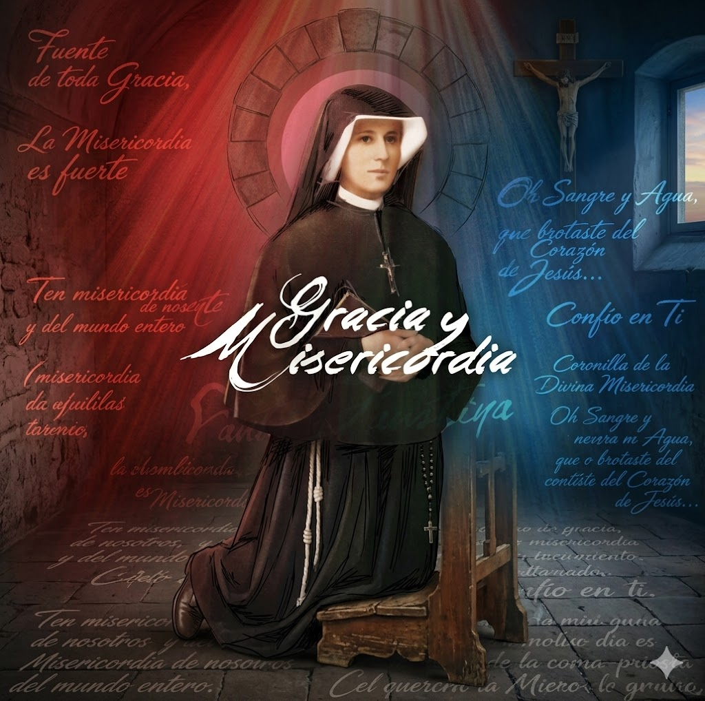
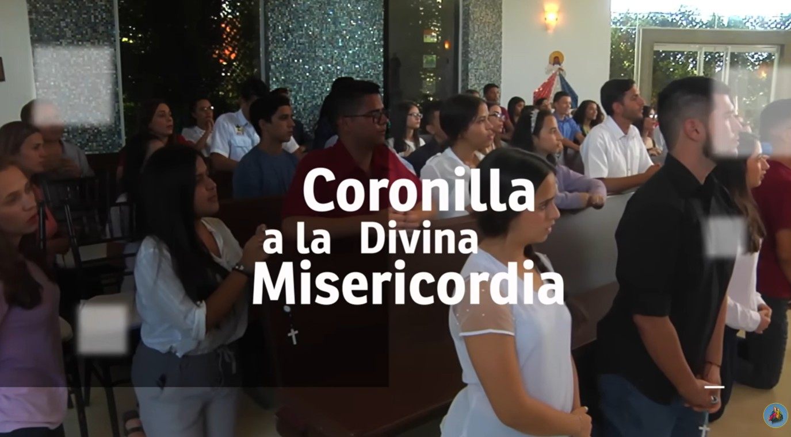
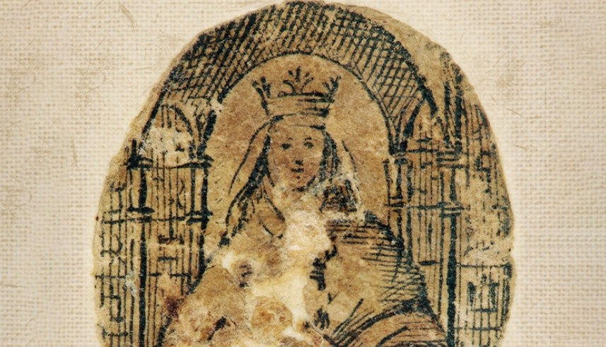
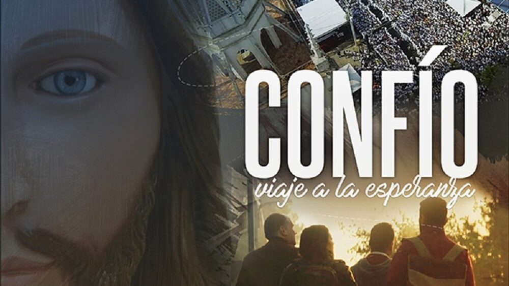

Frutos de nuestra vocación
Obras y Apostolado
Acompañamiento y Atención a los Sacerdotes
Con el nombramiento de Mons. Ubaldo Ramón Santana Sequera como Arzobispo Metropolitano de Maracaibo a finales del año 2000, fuimos invitados a servir en la sacristía atendiendo a los sacerdotes y obispos que asistieron a la misa de toma de posesión del nuevo Arzobispo el día 13 de enero de 2001. A partir de este momento comenzamos un proceso de discernimiento en el cual entendimos que el Señor Jesús nos invitaba, a través de este servicio, a estar unidos a Él a través de quienes Él mismo ha llamado al sacerdocio ministerial.
El sacerdote que actúa "in persona Christi" es dispensador de la misericordia Divina, que le ha sido confiada a través de su ordenación sacerdotal, recibida de manos del Obispo, sucesor de los apóstoles. Pero al mismo tiempo es un hermano, que Dios ha elegido de entre nosotros para consagrarse a su servicio, por lo cual dejándolo todo por el bien de los fieles, desgasta su vida al servicio del Señor y de su Iglesia.
A través del tiempo hemos comprendido con mayor claridad que el Señor Jesús nos ha invitado a acompañar a nuestros hermanos sacerdotes a través de la oración y sacrificio continuo por su santificación, a fin de que sean fieles al ministerio al cual han sido llamados. Por otra parte, también deseamos acompañarles con nuestro afecto y cercanía, asistiendo y ayudando especialmente a los sacerdotes pobres y/o enfermos con sus necesidades materiales, especialmente en el ámbito de la salud y la alimentación.


Procesión de la Divina Misericordia en Maracaibo
Desde el año 1996, en el Domingo de la Misericordia —segundo domingo de Pascua, instituido fiesta universal por San Juan Pablo II en el año 2000— nuestra Asociación organiza y anima la Procesión de la Divina Misericordia en la ciudad de Maracaibo, Venezuela, en obediencia al mandato de Jesús a Santa Faustina Kowalska de propagar la devoción a su Divina Misericordia en todo el mundo.
La procesión parte desde la Parroquia Cristo Rey, recorriendo las principales avenidas del casco central de Maracaibo. Con el paso de los años, esta celebración ha crecido hasta congregar a más de trescientos mil fieles, convirtiendo a Maracaibo en una de las ciudades del mundo con mayor afluencia en esta festividad litúrgica.
El recorrido procesional es presidido por la imagen del Jesús Misericordioso y se acompaña con la oración de la Coronilla de la Divina Misericordia, cantos litúrgicos y la participación de la jerarquía eclesiástica de la Arquidiócesis de Maracaibo. La celebración incluye la Santa Misa solemne al cierre del recorrido, en la cual se expone la reliquia de primer grado de Santa Faustina Kowalska, patrimonio espiritual de nuestra Asociación.
Esta obra, que nació como un sencillo acto de piedad popular, se ha convertido en un signo profético de esperanza para el pueblo venezolano y en uno de los principales frutos del carisma que Dios ha confiado a María Camino a Jesús.
Encuentro Gracia y Misericordia
Debido al crecimiento continuo del número de fieles que cada año asistían a la celebración de la procesión de la Misericordia, sentimos la inquietud de poder brindar un espacio en el cual los fieles pudieran alimentar su fe de manera sólida, a fin de que esta celebración no fuera sólo un acto de piedad popular, sino que ayudara a impulsar procesos profundos de transformación y conversión personal.
En el año 2011, con motivo de la celebración del 15° aniversario de la procesión de la Misericordia, y con el respaldo del entonces Obispo Auxiliar Mons. Cástor Oswaldo Azuaje, solicitamos a las Hermanas de la Congregación de la Madre de Dios de la Misericordia una reliquia de primer grado de Santa Sor Faustina Kowalska, siendo la primera reliquia de primer grado de esta santa conferida a una comunidad en Venezuela.
Es así como, de la mano de la Santísima Virgen María y de Santa Faustina Kowalska, recibimos la inspiración de crear el encuentro "Gracia y Misericordia", el cual celebramos desde el año 2013, durante la primera semana del mes de octubre de cada año, con especial preeminencia el día 05 por ser la fiesta litúrgica de Santa Faustina.
Este encuentro es abierto a cualquier persona que desee conocer y profundizar en diferentes aspectos concernientes a nuestra fe. Se ha desarrollado con la participación de predicadores católicos como el Dr. Ricardo Castañón, la Lcda. Dunia Mavarez, el Lcdo. Elvy Monzant, la Hna. Gracelia Molina A.R.C.J. (Vicepostuladora de la causa de canonización de la Madre María de San José) y la Hna. Gaudia Skass de la Congregación de las Hnas. de la Madre de Dios de la Misericordia.
En este encuentro los fieles tienen la oportunidad de profundizar en su fe, orar, alabar a Dios, hacer adoración eucarística, acudir al sacramento de la confesión y venerar la reliquia de Santa Faustina Kowalska.

Producciones Audiovisuales
Como parte de nuestro carisma, hemos trabajado desde el año 1996 en la difusión de la devoción de la Divina Misericordia a través de producciones audiovisuales que han llegado a millones de fieles en toda la región.

Coronilla a la Divina Misericordia
En 2006, junto a un pequeño grupo de fieles y la Hna. Francisca de los Ángeles, grabamos la "Novena de la Misericordia", transmitida por Niños Cantores Televisión desde el Viernes Santo. En 2007 fue producida en alianza con Global TV en señal abierta regional.
En 2008 y 2010, con Global Productora, se grabó "La Coronilla de la Misericordia", transmitida diariamente por NCTV de lunes a domingo a las 3:00 p.m., de manera ininterrumpida. Por mucho tiempo se mantuvo en el primer lugar de sintonía de la televisión regional del Zulia.
El 08 de diciembre de 2018 fue grabada una nueva edición con participación de jóvenes de la Arquidiócesis, con correcciones en la oración según las indicaciones de las Hijas de la Madre de Dios de la Misericordia (Congregación de Santa Faustina).
Ver en YouTube
El Resplandor de la Bella Señora
En enero de 2009, los obispos de toda Venezuela, reunidos en asamblea general y de la mano de Mons. José Sotero Valero, V Obispo de Guanare, concedieron a nuestra Asociación la autorización para realizar el proceso de restauración de la Sagrada Reliquia de Ntra. Sra. de Coromoto, custodiada en Guanare, Estado Portuguesa.
Este proceso se llevó a cabo del 09 al 15 de marzo de 2009, revelando hallazgos hasta entonces desconocidos. El documental, producido en 2010, relata en 57 minutos la historia de las apariciones de la Patrona de Venezuela a la tribu de los indios Coromoto, con imágenes inéditas del proceso de restauración.

Confío, Viaje a la Esperanza
Maracaibo es reconocida a nivel mundial como una de las ciudades que congrega más fieles en el Domingo de la Misericordia. Más de trescientos mil devotos recorren las principales avenidas bajo un fuerte sol, con más de 35°C de temperatura.
Producido por José Luis Matheus y María Goya Sumoza, bajo la visión del realizador Jesús Reyes Borjas, este documental recorre más de diez ciudades entre Polonia, Lituania e Italia siguiendo las huellas de Santa Faustina y la relación profunda de San Juan Pablo II con la Divina Misericordia.
Un viaje interior de búsquedas y reconocimiento espiritual, que convierte a la Divina Misericordia en un idioma universal para la humanidad.